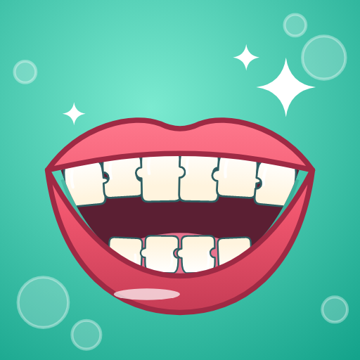
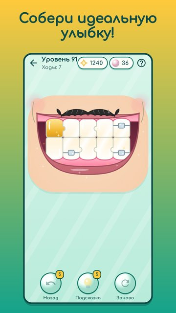

Фабрика улыбок
Собери идеальную улыбку из зубов-пазлов!
Перед тобой открытый рот, а на ленте фабрики — зубы-пазлы. Перетаскивай их в лунки и поворачивай касанием: выступ входит в выемку, верхние и нижние зубы смыкаются бугорками. Всё сошлось — челюсти щёлкают, и клиент широко улыбается!

- Своя логическая головоломка: думай, какой зуб куда встанет.
- 300 уровней и 20 весёлых клиентов: бабушка, пират, певица, кот и другие.
- Новинки по ходу игры: брекеты, кривые улыбки, лишний зуб, золотая коронка.
- Альбом улыбок, улыбка дня и ежедневные задания.
- Без спешки и проигрышей: подсказки и отмена хода всегда рядом.
- Играй без интернета, на русском и английском.